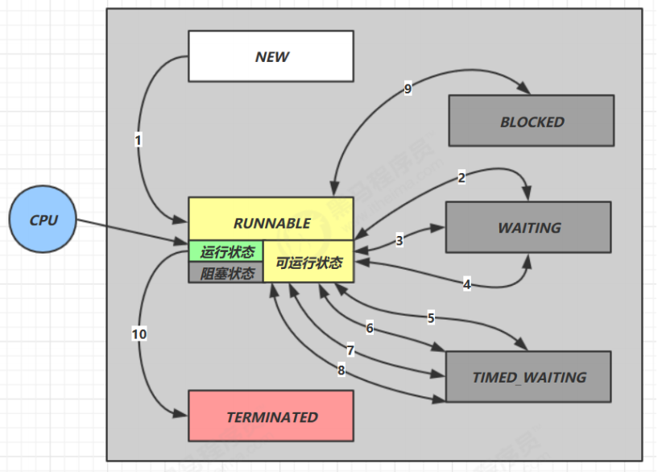

14-Java线程状态切换
线程状态切换
具体切换
1. NEW -> RUNNABLE
start方法后，由 NEW 切换到 RUNNABLE 状态，可以争夺CPU时间片
2. RUNNABLE <--> WAITING
t 线程 进入
synchronized(obj)后调用obj.wait()会从 RUNNABLE 切换到 WAITING（WaitSet）调用
obj.notify()，obj.notifyAll()，t.interrupt()时竞争锁成功，t 线程从 WAITING -> RUNNABLE
竞争锁失败，t 线程从 WAITING ->BLOCKED （EntryList）
3. RUNNABLE <--> WAITING
当前线程调用了
t.join()当前线程从 RUNNABLE -> WAITING。当前线程在 t 线程对象的监视器上等待t 线程运行结束或者调用了当前线程的
interrupt()，当前线程 WAITING -> RUNNABLE
4. RUNNABLE <--> WAITING
- park 与 unpark
5. RUNNABLE <--> TIMED_WAITING
t 线程 进入
synchronized(obj)后调用obj.wait(long n)会从 RUNNABLE 切换到 TIMED_WAITING（WaitSet）调用
obj.notify()，obj.notifyAll()，t.interrupt()或者 t 线程等待时间超了时竞争锁成功，t 线程从 TIMED_WAITING -> RUNNABLE
竞争锁失败，t 线程从 TIMED_WAITING ->BLOCKED （EntryList）
6. RUNNABLE <--> TIMED_WAITING
当前线程调用了
t.join(long n)当前线程从 RUNNABLE -> TIMED_WAITING。当前线程在 t 线程对象的监视器上等待t 线程运行结束，或调用了当前线程的
interrupt()，或当前线程等待超时了 ：当前线程 TIMED_WAITING -> RUNNABLE
7. RUNNABLE <--> TIMED_WAITING
Thread.sleep(long n)调用后为 TIMED_WAITING超时转为 RUNNABLE
8. RUNNABLE <--> TIMED_WAITING
- parkNanos(long nanos) 与 parkUntil(long millis）
9. RUNNABLE <--> BLOCKED
- 竞争synchronized（obj）锁失败
10. RUNNABLE <--> TERMINATED
- 当前线程代码运行完毕
总结
NEW为新建态
RUNNABLE 包含了运行态和就绪态
wait，sleep，park，join（底层就是 wait） 都切换给 WAITING，或 TIMED_WAITING 状态
竞争 synchronized 锁失败（在EntryList）会切换到 BLOCKED
TERMINATED 线程结束
对比操作系统的五个线程状态概念，把运行态和就绪态合并到 RUNNABLE，同时阻塞态拆分为 BLOCKED，WAITING，TIMED_WAITING
